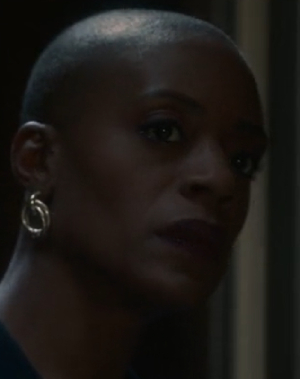
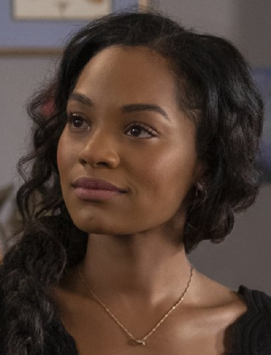
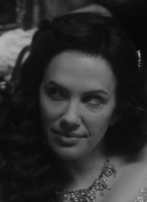
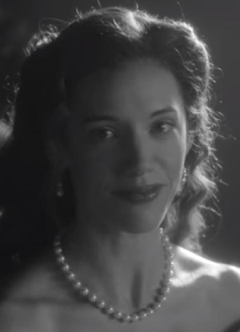

Fantasmas de Bly
en esta pagina se presentaran los personajes de la serie que comienzan la serie como fantasmas, con la menor cantidad de spoilers posibles;
si se desea saber que ocurre a cada uno en el transcurso de la serie dirijase a la pagina "Episodios".
Hannah Grose

El Ama de Llaves de la mansion, es una mujer muy comprometida con su trabajo y con la familia Wingrave. La mayor parte de la serie no se
revela a la audiencia que ella esta muerta, ya que busca ignorarlo a proposito para poder continuar con sus labores como ama de llaves.
Es interpretada por T'Nia Miller.
Rebecca Jessel
>

La predecesora de Dani, estuvo en una relacion con Peter antes de ser asesinada por el luego de que el no pudo poseer su cuerpo para
huir de la mansion. Es interpretada por Tahirah Sharif.
Peter Quint
El anterior asistente ejecutivo de Henry y amante de Rebecca. A pesar de haber sido considerado como un tio por los niños, los adultos
no comparten su afecto hacia el debido a que decidio robar dinero y joyas de la mansion para mudarse a Estados Unidos. Los unicos
que saben de su muerte son Flora, Miles, y Rebecca. Es interpretado por Oliver Jackson-Cohen.
Viola Lloyd

Una previa dueña de la mansion Bly, su hermana la asesina luego de años de sufrir su maltrato, pero su fantasma regresa para matarla luego
de que ella abre el cofre que le dejo a su hija. En la actualidad los años deterioraron sus memorias, asi que en vez de buscar a su hija
arrastra a cualquier persona que encuentra hasta el lago. Es interpretada por Kate Siegel y Daniela Dib
Perdita Willoughby

La hermana de Viola, quien la asesino debido a su maltrato, murio tras abrir el cofre con la herencia que Viola dejo a su hija, la cual queria
vender para saldar deudas. Es interpretada por Catherine Parker.